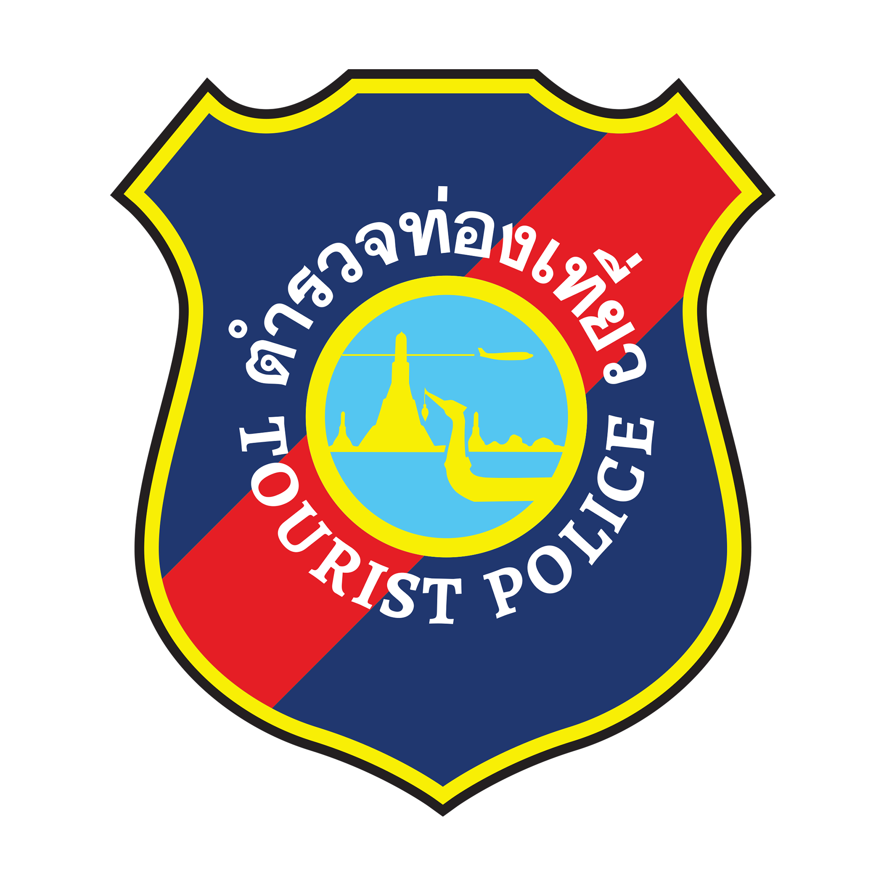

ระบบเช็คอินเข้าร่วมงาน
Check-in for Event Participants
Check-in
แผนผังที่นั่ง Seating Map
🔍 ขยาย
✕
✕
ยินดีต้อนรับสู่
กองบัญชาการตำรวจท่องเที่ยว
Welcome to Tourist Police Bureau
วันสถาปนากองบัญชาการตำรวจท่องเที่ยว
กดเพื่อเข้าร่วมงาน | Press to join the event
กดปุ่มเพื่อเริ่มเช็คอิน / Press the button to start check-in